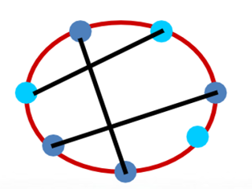
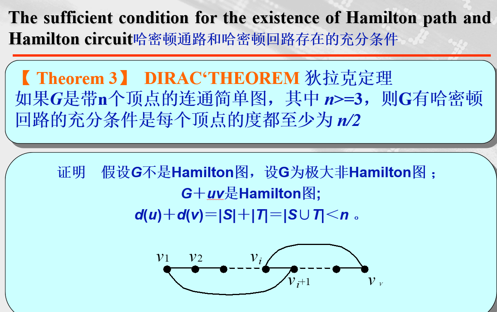

离散：3.欧拉图与哈密顿图
定义1
设G是一个图，G中包含所有边的通路/迹(即每条边恰好出现一次的路径)称为Euler通路/迹，闭的Euler迹称为Euler闭迹或Euler回路；
具有Euler回路的图称为Euler图，开的Euler迹称为Euler开迹，具有Euler开迹的图称为半Euler图。
Terminologies:
-
Euler Circuit(欧拉回路)：An Euler circuit in a graph G is a simple circuit containing every edge of G.
- 欧拉回路，是包含着G的每一条边的简单回路
- （回路，即闭迹）
- 设 为图G中的一条路径，若边 互不相同，则称该路径为迹；若点序列互不相同，则称该路径为路。
-
Euler Path(欧拉通路)：An Euler path in G is a simple path containing every edge of G.
- 欧拉通路，是包含着G的每一条边的简单通路
-
Euler Graph(欧拉图)：A graph contains an Euler circuit.
- 包含欧拉回路的图称为欧拉图。
-
Simple Path/Circuit（简单路径/回路）：A path or circuit is called simple if it does not contain the same edge more than once.
- 不包含重复边的路径或回路称为简单路径/回路
欧拉回路和欧拉通路的充要条件
-
连通多重图具有欧拉回路当且仅当它的每个顶点都有偶数度
-
连通多重图具有欧拉通路而无欧拉回路，当且仅当它恰有两个奇数度顶点
有向图中的欧拉回路与欧拉通路
A directed multigraph having no isolated vertices has an Euler circuit if and only if
一个没有孤立顶点的有向多重图含有欧拉回路的充要条件是：
-
the graph is weakly connected 弱连通的
-
the in-degree and out-degree of each vertex are equal 每个顶点的出度和入度相等
A directed multigraph having no isolated vertices has an Euler path but not an Euler circuit if and only if
一个没有孤立顶点的有向多重图含有欧拉通路但不含欧拉回路的充要条件是：
-
the graph is weakly connected
- 弱连通的
-
the in-degree and out-degree of each vertex are equal for all but two vertices, one that has in-degree 1 larger than its out-degree and the other that has out-degree 1 larger than its in-degree.
- 除去两个顶点外每个顶点的出度和入度相等，其中一个顶点的出度比入度大1，另一个顶点的入度比出度大1.
哈密顿通路和回路
-
A Hamilton path in a graph G is a path which visits ever vertex in G exactly once.
- 哈密顿通路是一个访问图G中每个顶点次数有且仅有一次的通路
-
AHamilton circuit (or Hamilton cycle) is a cycle which visits every vertex exactly once, except for the first vertex, which is also visited at the end of the cycle.
- 哈密顿回路，仅访问每个顶点一次，但除去始点，这个始点同样也是终点。
-
If a connected graph G has a Hamilton circuit, then G is called aHamilton graph.
- 如果一个连通图G含有哈密顿回路，那么G是哈密顿图
Note: 定义适用与所有类型的有向图和无向图.
哈密顿图的必要条件
定理1
设G是Hamilton图，则对于顶点集V的任一非空真子集S，均有。
这里G-S表示从图G中删去S中的所有顶点以及所关联的边
证明： 设C是G中任意哈密顿回路，
当S中的顶点在C中不相邻时，，这时子图中产生的分支数最多。
否则。
所以。

因为图G是哈密顿图，所以必存在哈密顿回路C。
我们来考察两种情况
（i）S中的顶点在C中均彼此相邻，则从C中删除S所有顶点击关联边不增加连通分支，即w(C-S)=1<=|S|
（ii）S中的顶点在C中不相邻，不妨设有r个顶点不相邻，r>=2,r<=|S|。则w(C-S)=r<=|S|
一般情况下，S中的顶点在C中既有相邻的也有不相邻的。所以w(C-S）<=|S|。
而G-S中边包含C-S的边，因此w(G-S) <=w(C-S)<=|S|.


图G的闭包
设G是一个图，反复连接满足d(u)＋d(v)≥n的不相邻顶点u，v，直到没有这样的顶点对为止，这样得到的图称作图G的闭包，记为C(G)。
定理３
- 简单图G是Hamilton图当且仅当C(G)是Hamilton图。
推论1
- 若C(G)是完全图，则G是Hamilton图。
推论２
- 若G中任意不相邻顶点u，v均满足d(u)＋d(v)≥n，则G是Hamilton图。